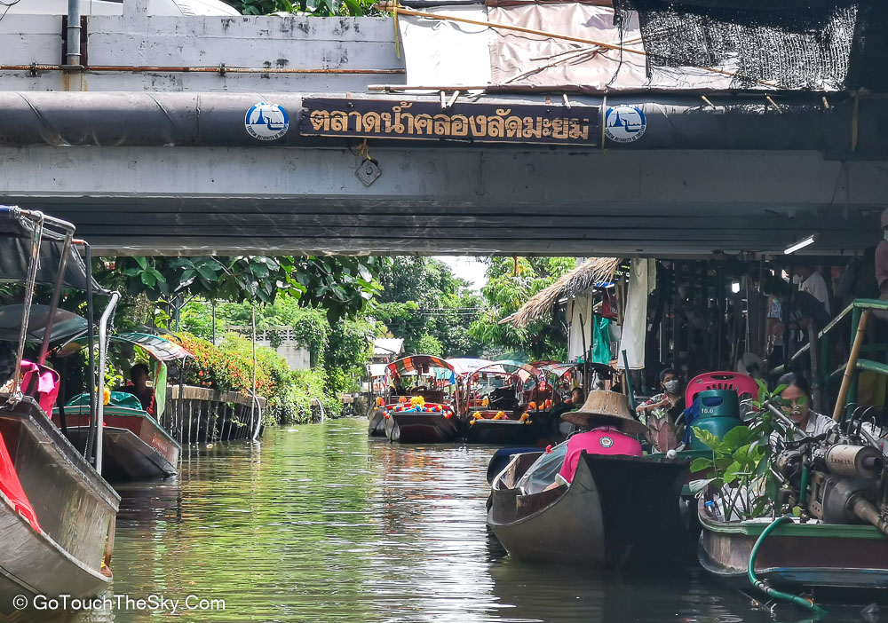

|
 |
 |
|---|

ตลาดน้ำตลิ่งชัน
ตลาดน้ำตลิ่งชัน ตั้งอยู่บริเวณสำนักงานเขตตลิ่งชัน ถนนฉิมพลี ความเป็นมาของตลาดน้ำตลิ่งชัน ได้ริเริ่มจัดตั้งโดยผู้อำนวยการ
สำนักงานเขตตลิ่งชัน เพื่อให้เป็นศูนย์รวมผลิตภัณฑ์และผลิตผลทางการเกษตรของเกษตรกรในพื้นที่ ตั้งแต่ปี 2530 หลังจากนั้นในปี 2542
ได้สร้างแพเหล็กขาย
สินค้าเริ่มแรก 5 แพ และก่อสร้างเพิ่มขึ้นมาเป็น 11 แพ ในปัจจุบันตลาดน้ำตลิ่งชัน เป็นตลาดกึ่งชนบท
ผสมผสานระหว่างชีวิตริมน้ำกับธรรมชาติ มีความสวยสดงดงาม มีอากาศบริสุทธิ์ ราวกับได้ย้อนยุคกลับไปสู่สังคมในอดีตที่ผู้คนต่างทำมาหากินในระดับชีวิตแบบพอเพียง
ด้วยการเก็บพืชผัก ผลไม้ จากไร่สวนมาขายทำให้ผลผลิตที่วางเรียงรายขาย จะผลัดเปลี่ยนหมุนเวียน
ไปตามฤดูกาล
บางคนก็แปลงกายจากแม่บ้านเป็นแม่ค้า
โชว์ฝีมือทำอาหาร รสเด็ดตามสไตล์ที่ถนัด เช่นหมูสะเต๊ะ ขนมเบื้องญวน ก๋วยเตี๋ยว ก๋วยจั๊บ หอยทอด
ส้มตำ เต้าหู้ทอด กุ้งเผา
ปลาเผา ปลาดุกย่าง ของหวานก็มีหลายอย่าง ฯลฯ ซึ่งรับประกันเลยว่าอร่อยเด็ดทุกร้าน

ตลาดน้ำคลองลัดมะยม
เดิมตลาดน้ำคลองลัดมะยม ตั้งอยู่ด้านใต้ของถนนบางระมาด ในปี 2547 อีกสองปีต่อมา
ย้ายมาอยู่ด้านเหนือของถนนบางระมาด
ตลาดน้ำคลองลัดมะยม เป็นตลาดน้ำขนาดเล็ก ที่ผู้มาเยือนสามารถสัมผัสวิถีชีวิตคนที่นี่
ได้อย่างใกล้ชิด เริ่มจากเข้าชม “สวนเจียมตน” ซึ่งเป็นสวนของชาวบ้านในย่านนี้ จะเห็นพันธุ์ไม้ต่างๆ
มากมาย และมีซุ้มให้เรียนรู้การผลิตปุ๋ยน้ำหมัก การอนุรักษ์ดินและน้ำ
ด้วยหญ้าแฝก
ต่อจากนั้นก็เดินเลือกซื้อกล้วยไม้หรือต้นไม้กลับบ้าน
แล้วก็แวะไปหาอะไรกินริมน้ำ
เอาแรงก่อนไปชมพิพิธภัณฑ์เรือจำลอง ที่บอกเล่าเรื่องราวของเรือแต่ละประเภท
พร้อมๆกับรู้จักการดำเนินชีวิตควบคู่สายน้ำของคนไทย
หรือจะนั่งเรือพายชมสวน ค่าบริการก็เพียง 10 บาทเท่านั้น แต่ถ้านั่งแบบแวะเที่ยวขึ้นบก
มีบริการแบบเหมาลำประมาณ 300-400 บาท เช่น เส้นทางตลาดน้ำ-บางระมาด-บ้านไทรเส้นทางตลาดน้ำ-บ้านพิพิธภัณฑ์
เส้นทางสวนแก้วมังกร ชมบอนไซ เป็นต้น

เป็นตลาดน้ำใจกลางกรุง ริมคลองแสนแสบที่เชื่อมสองฝั่งคลองระหว่างวัดบำเพ็ญเหนือ
และวัดบางเพ็งใต้ และเป็นจุดกำเนิดนิยายอมตะชื่อดังเรื่อง “แผลเก่า”
ซึ่งตัวเอกในเรื่องก็คือ
"ขวัญและเรียม" จึงเป็นที่มาของชื่อตลาดน้ำขวัญเรียมแห่งนี้
โดยจำลองภาพชีวิตและประเพณีของชาวบ้านริมฝั่งคลอง
มาสัมผัสกับวิถีชีวิตริมคลองแสนแสบในครั้งอดีต ที่กำลังจะถูกลบเลือนหายไปทุกที
ตลาดน้ำขวัญเรียมเปิดให้บริการทุกวันเสาร์ – อาทิตย์ และวันหยุดนักขัตฤกษ์
สะพานข้ามคลองจัดว่าเป็นไฮไลท์ และเป็นสัญลักษณ์ประจำตลาดน้ำขวัญเรียม
ซึ่งอยู่ตรงกลางตลาดเชื่อมระหว่างวัดบำเพ็ญเหนือและวัดบางเพ็งใต้
มีความสวยงามและโดดเด่นที่ใครต่อใครมักจะมาถ่ายภาพกันไม่ขาดสาย
หากในวันที่อากาศร้อนหรือมีฝนตก ทางตลาดน้ำยังบริการร่มไว้ให้ตรงเชิงสะพานทางขึ้นลงด้วย
ใช้เสร็จแล้วนำมาคืนด้วยนะ ห้ามนำกลับไปบ้านนะ ส่วนผู้สูงอายุหรือผู้พิการที่นั่งรถเข็น
หรือเดินขึ้นบันไดไม่ค่อยถนัดนัก สะพานแห่งนี้ยังได้สร้างลิฟท์ไว้ให้บริการอีกด้วย
นี่คืออีกหนึ่งประทับใจสำหรับตลาดน้ำขวัญเรียม ที่ใครๆ มาแล้วก็สามารถข้ามสะพานได้สะดวกมากขึ้น
กดตรงนี้เพื่อกลับขึ้นข้างบน กด